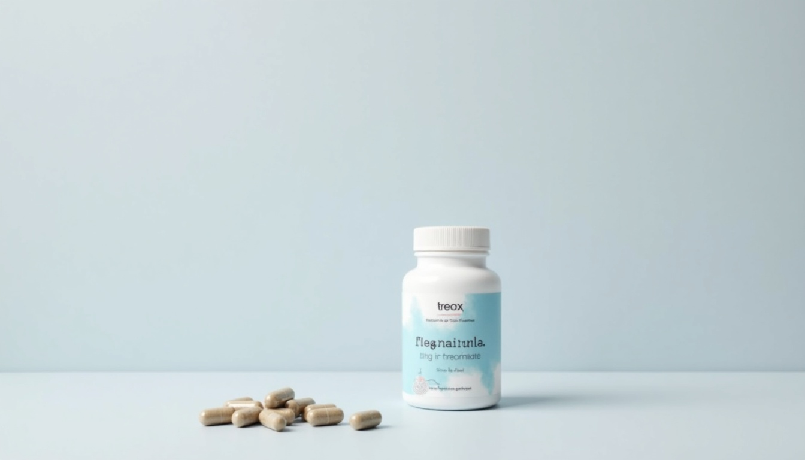

You bought magnesium. Good instinct. Magnesium is, by a significant margin, the most evidence-supported mineral supplement for the cluster of symptoms that define perimenopause — the insomnia, the anxiety, the muscle cramps at 2am, the brain fog that makes you forget why you walked into a room.
But here's the problem: you almost certainly bought the wrong form. The magnesium oxide tablets in most supermarket supplements have a bioavailability of approximately 4%. That means for every 400mg on the label, your body absorbs roughly 16mg. The rest passes straight through your gut — which is why magnesium oxide's primary clinical use is as a laxative, not a supplement.
The form matters more than the dose. Glycinate for sleep and anxiety. Threonate for brain fog. Citrate for muscle cramps and regularity. Each chelated to a different amino acid or organic compound, each with a different absorption pathway and tissue target. This isn't marketing — it's basic pharmacokinetics.
I grew up watching my grandmother dissolve mineral salts in the oncheon (온천) — Korea's natural hot springs, rich in magnesium, calcium, and trace minerals. She didn't know the word "transdermal absorption." She just knew that soaking in those waters three times a week kept the aches away and helped her sleep. The science caught up with what Korean women have practised for centuries.
"The form matters more than the dose. Most women are taking the right mineral in the wrong vehicle."
Why Perimenopause Depletes Magnesium
Magnesium and oestrogen have a bidirectional relationship that most supplement guides completely ignore. Research suggests that oestrogen facilitates magnesium absorption and utilisation — it upregulates the TRPM6 and TRPM7 channels in the intestine and kidneys that transport magnesium into cells. When oestrogen levels decline and fluctuate during perimenopause, these transport mechanisms become less efficient. You can be eating the same diet and absorbing measurably less magnesium.
This creates a compounding problem. Magnesium is a cofactor in over 300 enzymatic reactions — it's required for GABA receptor binding (your primary calming neurotransmitter), for melatonin synthesis, for muscle relaxation, for cortisol regulation, and for maintaining bone mineral density. When functional magnesium levels drop, every one of those systems degrades simultaneously. That's why perimenopause doesn't produce one symptom — it produces a cascade.
The symptoms of magnesium deficiency and the symptoms of perimenopause overlap almost perfectly: insomnia, anxiety, muscle cramps, heart palpitations, brain fog, irritability, headaches. This isn't coincidental. For many women, the hormonal transition unmasks or worsens a pre-existing magnesium insufficiency that was previously compensated for by adequate oestrogen.
And the baseline isn't great. Approximately 50% of adults in Western countries already consume less than the recommended daily magnesium intake (WHO, Rosanoff 2012). Modern agricultural soils are depleted. Processed food strips magnesium. Stress — which perimenopause delivers in abundance — increases urinary magnesium excretion. You're losing more and absorbing less, precisely when you need it most.
The 4 Types That Matter (And the 1 to Avoid)
Magnesium Glycinate / Bisglycinate — For Sleep and Anxiety
Magnesium glycinate is magnesium chelated to glycine — an inhibitory amino acid that itself promotes relaxation and sleep. This dual mechanism is what makes glycinate the best-evidenced form for perimenopausal insomnia and anxiety.
Magnesium glycinate/bisglycinate supplementation significantly improves insomnia severity. A systematic review and meta-analysis of magnesium supplementation found it associated with improvements in self-reported anxiety and sleep quality. The glycine component binds to NMDA receptors, lowering core body temperature — the same physiological signal your body uses to initiate sleep onset.
Bioavailability is roughly 25–30%, vastly superior to oxide. It's gentle on the gut (glycine is protective of the intestinal lining), which matters because many perimenopausal women already deal with digestive sensitivity.
Evidence tier: T2 (well-designed clinical trials). Dose: 200–400mg elemental magnesium, taken 30–60 minutes before bed. Best for: Sleep onset difficulty, night waking, generalised anxiety, muscle tension. Note: Look for "bisglycinate" on the label — it's the same compound. Start at 200mg and increase after one week if needed.
Magnesium L-Threonate (Magtein) — For Brain Fog
If your primary complaint is the cognitive symptoms — the word retrieval failures, the inability to hold complex tasks in working memory, the feeling that your brain is operating through fog — magnesium L-threonate is the most targeted option, though the evidence is still developing.
Animal studies suggest that magnesium L-threonate crosses the blood-brain barrier more effectively than other forms, raising brain magnesium concentrations in ways that other forms cannot match. Early human research indicates improvements in cognitive function — a 2016 study found older adults taking Magtein showed improved executive function and working memory compared to placebo.
The caveat: the human evidence is still early-stage, and much of the mechanistic work is from animal models. This is a T4 evidence tier recommendation — promising, biologically plausible, but not yet confirmed by large-scale human trials. I include it because the risk profile is low and the cognitive symptoms of perimenopause are often the most distressing.
Evidence tier: T4 (early research suggests benefit). Dose: 1,000–2,000mg of magnesium L-threonate daily (this delivers approximately 144mg of elemental magnesium — lower than glycinate, but the enhanced brain penetration is the point). Best for: Brain fog, working memory issues, cognitive slowdown. Timing: Morning or early afternoon — some women report mild alertness.
Magnesium Citrate — For Muscles and Digestion
Magnesium citrate has higher bioavailability than oxide and supports muscle relaxation and bowel regularity. It's magnesium bound to citric acid — well-absorbed, widely available, and the form to reach for if muscle cramps, restless legs, or constipation are your primary issues.
Bioavailability is approximately 25–30%, comparable to glycinate. The citrate carrier has a mild osmotic laxative effect, which can be a feature or a bug depending on your situation. For the many perimenopausal women who experience constipation (progesterone fluctuations slow gut motility), this dual action is genuinely useful.
The Natural Calm powder form dissolves in water and creates a pleasant effervescent drink — many women find it easier to incorporate as an evening ritual than swallowing capsules.
Evidence tier: T3 (good mechanistic and clinical evidence). Dose: 200–400mg elemental magnesium, as needed. Best for: Muscle cramps, restless legs, constipation, general supplementation. Note: Reduce dose if stools become too loose. Can be taken any time of day.
Magnesium Taurate — For Heart Palpitations
Magnesium taurate is chelated to taurine — an amino acid with its own cardiovascular benefits. If heart palpitations are a prominent symptom (common in perimenopause due to shifting oestrogen's effect on cardiac rhythm), taurate is the most targeted form. Taurine has been shown to stabilise cardiac cell membranes and support healthy blood pressure.
The evidence base for taurate specifically is thinner than for glycinate or citrate — most of the cardiovascular support data comes from taurine studies rather than the magnesium-taurine complex. But the rationale is sound: magnesium itself is a natural calcium channel blocker (calcium drives muscle contraction; magnesium promotes relaxation), and adding taurine doubles down on the cardiac calming effect.
Evidence tier: T3/T4 (taurine well-evidenced; the combined form less studied). Dose: 200–400mg elemental magnesium daily. Best for: Heart palpitations, blood pressure support, cardiovascular calming. Timing: Morning or evening — no strong preference.
Magnesium Oxide — The One to Avoid
Magnesium oxide has poor bioavailability — approximately 4% compared to chelated forms at 25–40% (Firoz & Graber 2001). It's the cheapest form to manufacture, which is why it dominates supermarket shelves and pharmacy-brand supplements. At 400mg on the label, you're absorbing approximately 16mg. You'd need to take enormous doses to match what a single glycinate capsule delivers — and at those doses, the primary effect is diarrhoea.
If the magnesium supplement you bought says "magnesium oxide" on the ingredients panel, it's essentially a laxative with a small mineral bonus. I don't say this to be unkind — I say it because women deserve to know they're spending money on something that isn't doing what the label implies.
The Korean Mineral Spring Connection
Korea's oncheon (온천) tradition — natural mineral hot springs — is one of the oldest wellness practices in East Asia. The springs at Busan's Haeundae, Yuseong in Daejeon, and Suanbo in Chungju have been used for centuries, and the mineral composition of many Korean thermal springs is rich in magnesium, calcium, sulfur, and silica.
Transdermal magnesium absorption — through the skin — is a real phenomenon, though the research is still catching up with the practice. A 2017 pilot study found that soaking in magnesium-rich Dead Sea salts for 12 minutes raised intracellular magnesium levels. The mechanism is passive diffusion through the stratum corneum, enhanced by warm water which opens pores and increases blood flow to the skin surface.
My grandmother didn't need a study to tell her this. Three times a week at the oncheon in winter, she'd soak for 20 minutes, then sit on the heated stone floor (찜질방 style) to let the minerals absorb. She slept well. Her joints didn't ache. She was calm in a way that I, at 38 with a bottle of magnesium oxide on my nightstand, was decidedly not.
You don't need a Korean mineral spring. An Epsom salt bath (magnesium sulfate) two to three times a week delivers transdermal magnesium and has the added benefit of the warm water itself — heat promotes muscle relaxation and vasodilation. It's not a replacement for oral supplementation, but it's a beautiful complement. And it's the kind of ritual that Korean wellness (한방, hanbang) has always understood — that how you take something matters as much as what you take.
How to Choose and Dose
The decision tree is simpler than the supplement industry wants you to believe. Start with your primary symptom:
- Sleep and anxiety are primary: Magnesium glycinate, 200–400mg elemental, 30–60 minutes before bed.
- Brain fog and cognitive issues are primary: Magnesium L-threonate, 1,000–2,000mg (≈144mg elemental), morning or early afternoon. Note: early research suggests benefit, but evidence is still developing.
- Muscle cramps, restless legs, or constipation: Magnesium citrate, 200–400mg elemental, as needed.
- Heart palpitations: Magnesium taurate, 200–400mg elemental, daily.
- Multiple symptoms: Start with glycinate (broadest benefit, strongest sleep evidence). Add a second form after 4 weeks if needed — they address different pathways and can be combined.
Magnesium supplementation may reduce the frequency of menopausal hot flashes, though the effect is modest. If vasomotor symptoms are your primary concern, magnesium alone isn't the strongest tool — it works better for sleep, anxiety, and musculoskeletal symptoms. But it supports bone density, which is relevant given the accelerated bone loss during perimenopause.
Timing matters. Glycinate before bed (sedating). Threonate in the morning (mildly energising). Citrate any time (adjust based on digestive response). The upper tolerable intake for supplemental magnesium is 350mg elemental per day for most adults — above this, the main risk is digestive upset, not toxicity. Magnesium is water-soluble; your kidneys excrete any excess.
Start low. Begin at the lower end of the range and increase after one week. Your gut microbiome needs time to adjust, and jumping straight to 400mg can cause loose stools regardless of the form.
Dark leafy greens (시금치, sigeumchi — Korean spinach), pumpkin seeds, almonds, dark chocolate, and black beans are all rich in magnesium. Korean cuisine is naturally high in magnesium-rich foods — the banchan tradition of multiple vegetable side dishes at every meal is one reason traditional Korean diets are associated with lower rates of metabolic syndrome. But if you're in active perimenopause with significant symptoms, food alone is unlikely to close the gap. Supplement strategically and eat well — both matter.

Amazon Associate links — I earn a small commission at no extra cost to you.
Frequently Asked Questions
It depends on your primary symptom. Magnesium glycinate is best for sleep and anxiety (strongest evidence). Magnesium L-threonate is the best option for brain fog (early research suggests it crosses the blood-brain barrier more effectively). Magnesium citrate is best for muscle cramps and digestion. Avoid magnesium oxide — it has only ~4% bioavailability.
Most studies showing benefit use 200–400mg of elemental magnesium daily. For glycinate: 200–400mg before bed. For threonate: 1,000–2,000mg (which delivers ~144mg elemental magnesium) in the morning. For citrate: 200–400mg as needed. Start at the lower end and increase gradually.
A double-blind placebo-controlled trial found magnesium supplementation modestly reduced the frequency of menopausal hot flashes. The effect is real but modest — magnesium works better for sleep, anxiety, and muscle symptoms than for vasomotor symptoms specifically.
Magnesium oxide has a bioavailability of approximately 4% compared to 25–40% for chelated forms like glycinate and citrate. This means your body absorbs very little of each dose. It's the cheapest form, which is why it's in most supermarket supplements — but it's primarily useful as a laxative, not a supplement.
The 3am Protocol
Ready to fix your sleep architecture?
28 days of circadian resets using Korean saenghwal practices and sleep science. The magnesium protocol is step one — the full system goes deeper.
Learn more →Some links in this article are Amazon Associate links. If you purchase through them, I earn a small commission at no extra cost to you. I only link products I'd genuinely recommend.